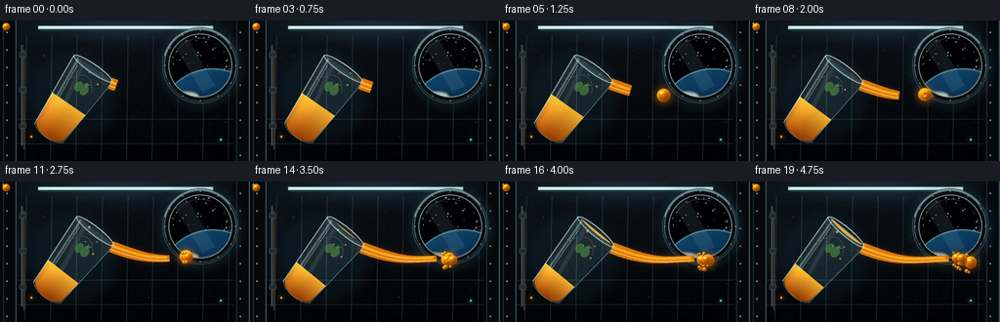
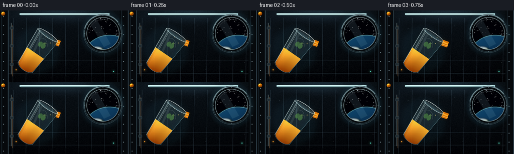
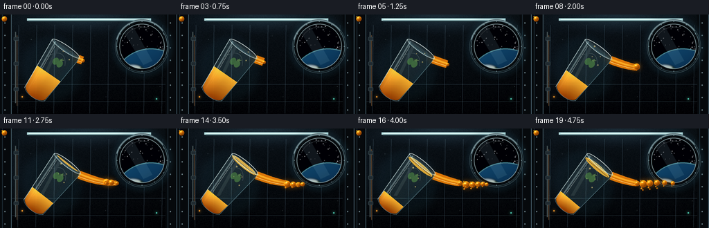

CODING AGENTS AS PIXEL WORLD MODELS
traex/DeepSeek-V4.1-Flash · mechanics_0007
点击播放 · 原生 RGB 像素
逐轮保存的候选
回放视频、检查图与代码变化。
每份候选均可单独播放。实际图片检查记录在下方工具轨迹中。
候选 01播放与检查图
点击播放 · 原生 RGB 像素


展开代码变化
--- 上一保存版本
+++ 本次保存版本
@@ -0,0 +1,553 @@
+from __future__ import annotations
+
+import math
+from pathlib import Path
+
+import numpy as np
+from PIL import Image, ImageChops, ImageDraw, ImageFilter
+
+import artifact_io
+
+
+ROOT = Path(__file__).resolve().parent
+W, H = 256, 144
+FPS = 4
+FRAMES = 20
+S = 4
+IW, IH = W * S, H * S
+
+
+def p(value: float) -> int:
+ return int(round(value * S))
+
+
+def rect(x0: float, y0: float, x1: float, y1: float) -> tuple[int, int, int, int]:
+ return p(x0), p(y0), p(x1), p(y1)
+
+
+def smoothstep(edge0: float, edge1: float, value: np.ndarray) -> np.ndarray:
+ x = np.clip((value - edge0) / (edge1 - edge0), 0.0, 1.0)
+ return x * x * (3.0 - 2.0 * x)
+
+
+def make_background() -> Image.Image:
+ yy, xx = np.mgrid[0:IH, 0:IW]
+ xn = xx / IW
+ yn = yy / IH
+
+ top = np.array([13.0, 21.0, 28.0])
+ bottom = np.array([5.0, 8.0, 12.0])
+ base = top[None, None, :] * (1.0 - yn[..., None]) + bottom[None, None, :] * yn[..., None]
+
+ overhead = np.exp(
+ -(((xn - 0.48) / 0.35) ** 2 + ((yn - 0.03) / 0.11) ** 2)
+ )
+ side_light = np.exp(
+ -(((xn - 0.02) / 0.15) ** 2 + ((yn - 0.45) / 0.44) ** 2)
+ )
+ base += overhead[..., None] * np.array([22.0, 35.0, 41.0])
+ base += side_light[..., None] * np.array([8.0, 14.0, 18.0])
+
+ vignette = 1.0 - 0.42 * np.clip(
+ ((xn - 0.5) / 0.64) ** 2 + ((yn - 0.48) / 0.72) ** 2, 0.0, 1.0
+ )
+ base *= vignette[..., None]
+
+ rng = np.random.default_rng(17)
+ grain = rng.normal(0.0, 1.6, (IH // 4, IW // 4, 1))
+ grain = np.repeat(np.repeat(grain, 4, axis=0), 4, axis=1)
+ base += grain
+
+ image = Image.fromarray(np.clip(base, 0, 255).astype(np.uint8), "RGB").convert("RGBA")
+ draw = ImageDraw.Draw(image, "RGBA")
+
+ # Curved module seams and recessed wall panels.
+ seam = (94, 124, 139, 54)
+ for x in (27, 53, 79, 105, 131, 157, 183, 209, 235):
+ draw.line([(p(x), p(15)), (p(x - 1.4), p(143))], fill=seam, width=max(1, p(0.35)))
+ for y in (101, 126):
+ draw.line([(p(15), p(y)), (p(241), p(y))], fill=(86, 113, 126, 34), width=max(1, p(0.35)))
+
+ # Structural ribs at both edges.
+ for x0, x1 in ((0, 17), (239, 256)):
+ draw.rectangle(rect(x0, 0, x1, 144), fill=(8, 12, 16, 205))
+ draw.line([(p(x1 - 0.7), p(0)), (p(x1 - 0.7), p(144))], fill=(92, 125, 139, 92), width=p(0.8))
+ draw.line([(p(x0 + 3.2), p(0)), (p(x0 + 3.2), p(144))], fill=(33, 49, 59, 170), width=p(1.0))
+ for y in range(12, 144, 18):
+ draw.ellipse(rect(x0 + 6.2, y - 0.7, x0 + 7.8, y + 0.9), fill=(126, 151, 158, 90))
+
+ # Overhead light rail.
+ draw.rectangle(rect(39, 5.5, 218, 8.8), fill=(185, 229, 231, 205))
+ draw.line([(p(42), p(7.1)), (p(215), p(7.1))], fill=(246, 255, 249, 230), width=p(0.7))
+ draw.rectangle(rect(41, 8.8, 216, 10.4), fill=(33, 52, 60, 220))
+
+ # Left-side utility pipes.
+ draw.line([(p(22.2), p(25)), (p(22.2), p(128))], fill=(74, 88, 90, 185), width=p(1.4))
+ draw.line([(p(24.6), p(30)), (p(24.6), p(132))], fill=(128, 90, 55, 150), width=p(0.7))
+ for y in (35, 71, 108):
+ draw.rounded_rectangle(rect(19.8, y - 2.5, 26.8, y + 2.5), radius=p(1.0), fill=(34, 46, 52, 235), outline=(98, 125, 132, 110), width=max(1, p(0.35)))
+
+ # A few quiet status indicators.
+ for x, y, color in ((32, 119, (255, 164, 50, 190)), (226, 122, (85, 218, 190, 150))):
+ glow = Image.new("RGBA", image.size, (0, 0, 0, 0))
+ gd = ImageDraw.Draw(glow)
+ gd.ellipse(rect(x - 3.5, y - 3.5, x + 3.5, y + 3.5), fill=(color[0], color[1], color[2], 72))
+ glow = glow.filter(ImageFilter.GaussianBlur(p(2.2)))
+ image.alpha_composite(glow)
+ draw.ellipse(rect(x - 1.1, y - 1.1, x + 1.1, y + 1.1), fill=color)
+
+ image = draw_window(image)
+
+ # A faint blue bloom around the viewport.
+ bloom = Image.new("RGBA", image.size, (0, 0, 0, 0))
+ bd = ImageDraw.Draw(bloom)
+ bd.ellipse(rect(161, 2, 249, 91), outline=(74, 174, 206, 58), width=p(8))
+ bloom = bloom.filter(ImageFilter.GaussianBlur(p(5.0)))
+ image.alpha_composite(bloom)
+
+ return image
+
+
+def draw_window(image: Image.Image) -> Image.Image:
+ draw = ImageDraw.Draw(image, "RGBA")
+ cx, cy, outer_r, inner_r = 205.0, 46.0, 39.0, 32.3
+
+ # Dark mounting collar.
+ draw.ellipse(rect(cx - outer_r, cy - outer_r, cx + outer_r, cy + outer_r), fill=(7, 10, 13, 255), outline=(55, 71, 78, 230), width=p(1.1))
+ draw.ellipse(rect(cx - outer_r + 2.0, cy - outer_r + 2.0, cx + outer_r - 2.0, cy + outer_r - 2.0), outline=(127, 156, 164, 110), width=p(0.7))
+
+ window_mask = Image.new("L", image.size, 0)
+ wm = ImageDraw.Draw(window_mask)
+ wm.ellipse(rect(cx - inner_r, cy - inner_r, cx + inner_r, cy + inner_r), fill=255)
+
+ content = Image.new("RGBA", image.size, (0, 0, 0, 255))
+ cd = ImageDraw.Draw(content, "RGBA")
+ cd.ellipse(rect(cx - inner_r, cy - inner_r, cx + inner_r, cy + inner_r), fill=(1, 4, 9, 255))
+
+ rng = np.random.default_rng(811)
+ for _ in range(62):
+ angle = rng.uniform(0, math.tau)
+ radius = inner_r * math.sqrt(rng.uniform(0.04, 0.94))
+ x = cx + math.cos(angle) * radius
+ y = cy + math.sin(angle) * radius
+ brightness = int(rng.integers(115, 246))
+ size = float(rng.uniform(0.22, 0.72))
+ cd.ellipse(rect(x - size, y - size, x + size, y + size), fill=(brightness, brightness, min(255, brightness + 8), 220))
+
+ # Earth fills the lower part of the viewport.
+ ey, ex, er = 106.0, 218.0, 57.0
+ yy, xx = np.mgrid[0:IH, 0:IW]
+ nx = (xx / S - ex) / er
+ ny = (yy / S - ey) / er
+ rr = np.sqrt(nx * nx + ny * ny)
+ inside = rr <= 1.0
+ ocean_t = np.clip(0.18 + 0.50 * (-nx * 0.45 - ny * 0.82), 0.0, 1.0)
+ ocean = np.array([4.0, 28.0, 58.0])[None, None, :] * (1.0 - ocean_t[..., None]) + np.array([24.0, 91.0, 132.0])[None, None, :] * ocean_t[..., None]
+ earth = np.zeros((IH, IW, 4), dtype=np.uint8)
+ earth[..., 0] = np.clip(ocean[..., 0], 0, 255).astype(np.uint8)
+ earth[..., 1] = np.clip(ocean[..., 1], 0, 255).astype(np.uint8)
+ earth[..., 2] = np.clip(ocean[..., 2], 0, 255).astype(np.uint8)
+ earth[..., 3] = np.where(inside, 255, 0).astype(np.uint8)
+ content.alpha_composite(Image.fromarray(earth, "RGBA"))
+
+ land = Image.new("RGBA", image.size, (0, 0, 0, 0))
+ ld = ImageDraw.Draw(land, "RGBA")
+ ld.ellipse(rect(184, 75, 211, 94), fill=(86, 121, 59, 225))
+ ld.ellipse(rect(205, 81, 235, 105), fill=(103, 126, 57, 230))
+ ld.ellipse(rect(196, 89, 222, 116), fill=(122, 111, 54, 220))
+ ld.ellipse(rect(232, 71, 249, 94), fill=(76, 110, 54, 210))
+ land = land.filter(ImageFilter.GaussianBlur(p(1.5)))
+ earth_mask = Image.fromarray(earth[..., 3], "L")
+ land.putalpha(ImageChops.multiply(land.getchannel("A"), earth_mask))
+ content.alpha_composite(land)
+
+ clouds = Image.new("RGBA", image.size, (0, 0, 0, 0))
+ cld = ImageDraw.Draw(clouds, "RGBA")
+ for x0, y0, x1, y1, alpha in (
+ (177, 72, 204, 82, 180),
+ (190, 84, 229, 94, 165),
+ (215, 73, 246, 83, 145),
+ (202, 96, 241, 106, 118),
+ ):
+ cld.ellipse(rect(x0, y0, x1, y1), fill=(236, 246, 244, alpha))
+ clouds = clouds.filter(ImageFilter.GaussianBlur(p(1.2)))
+ clouds.putalpha(ImageChops.multiply(clouds.getchannel("A"), earth_mask))
+ content.alpha_composite(clouds)
+
+ # Thin atmosphere and a sunlit limb.
+ cd = ImageDraw.Draw(content, "RGBA")
+ cd.arc(rect(ex - er, ey - er, ex + er, ey + er), 188, 352, fill=(91, 196, 222, 190), width=p(1.1))
+ cd.arc(rect(ex - er + 1.1, ey - er + 1.1, ex + er - 1.1, ey + er - 1.1), 198, 348, fill=(194, 238, 241, 95), width=p(0.55))
+
+ # Viewport glass reflection.
+ reflection = Image.new("RGBA", image.size, (0, 0, 0, 0))
+ rd = ImageDraw.Draw(reflection, "RGBA")
+ rd.polygon([(p(177), p(23)), (p(192), p(17)), (p(220), p(67)), (p(207), p(73))], fill=(165, 214, 222, 26))
+ rd.arc(rect(cx - inner_r + 4, cy - inner_r + 4, cx + inner_r - 4, cy + inner_r - 4), 203, 292, fill=(221, 244, 244, 58), width=p(0.7))
+ content.alpha_composite(reflection)
+
+ clipped = Image.new("RGBA", image.size, (0, 0, 0, 0))
+ clipped.paste(content, (0, 0), window_mask)
+ image.alpha_composite(clipped)
+
+ # Inner and outer metal bezel.
+ draw.ellipse(rect(cx - inner_r - 0.3, cy - inner_r - 0.3, cx + inner_r + 0.3, cy + inner_r + 0.3), outline=(186, 214, 216, 115), width=p(0.65))
+ draw.arc(rect(cx - outer_r + 1.1, cy - outer_r + 1.1, cx + outer_r - 1.1, cy + outer_r - 1.1), 195, 323, fill=(204, 226, 226, 145), width=p(0.8))
+ draw.arc(rect(cx - outer_r + 2.0, cy - outer_r + 2.0, cx + outer_r - 2.0, cy + outer_r - 2.0), 20, 160, fill=(48, 66, 73, 220), width=p(1.0))
+ for angle in np.linspace(0, math.tau, 12, endpoint=False):
+ x = cx + math.cos(angle) * (outer_r - 3.0)
+ y = cy + math.sin(angle) * (outer_r - 3.0)
+ draw.ellipse(rect(x - 0.55, y - 0.55, x + 0.55, y + 0.55), fill=(155, 177, 180, 115))
+ return image
+
+
+def glass_shape_points(cx: float, cy: float) -> list[tuple[float, float]]:
+ points: list[tuple[float, float]] = []
+ for i in range(36):
+ u = i / 35.0
+ y = -42.0 + 77.0 * u
+ half_width = 24.0 - 7.0 * (u ** 1.35)
+ points.append((cx + half_width, cy + y))
+ for i in range(1, 25):
+ theta = math.pi * i / 24.0
+ points.append((cx + 17.0 * math.cos(theta), cy + 35.0 + 9.0 * math.sin(theta)))
+ for i in range(36):
+ u = 1.0 - i / 35.0
+ y = -42.0 + 77.0 * u
+ half_width = 24.0 - 7.0 * (u ** 1.35)
+ points.append((cx - half_width, cy + y))
+ return points
+
+
+def render_glass(angle_deg: float, level_y: float) -> tuple[Image.Image, tuple[float, float]]:
+ layer_size = 120 * S
+ center = layer_size // 2
+ layer = Image.new("RGBA", (layer_size, layer_size), (0, 0, 0, 0))
+ mask = Image.new("L", (layer_size, layer_size), 0)
+ md = ImageDraw.Draw(mask)
+ md.polygon([(p(x), p(y)) for x, y in glass_shape_points(60.0, 60.0)], fill=255)
+
+ mask_arr = np.asarray(mask)
+ yy, xx = np.mgrid[0:layer_size, 0:layer_size]
+ local_y = yy / S - 60.0
+ local_x = xx / S - 60.0
+
+ tint = np.zeros((layer_size, layer_size, 4), dtype=np.uint8)
+ tint[..., 0] = np.clip(122.0 + 45.0 * np.clip((-local_x + 20.0) / 44.0, 0.0, 1.0), 0, 255).astype(np.uint8)
+ tint[..., 1] = np.clip(174.0 + 40.0 * np.clip((-local_x + 20.0) / 44.0, 0.0, 1.0), 0, 255).astype(np.uint8)
+ tint[..., 2] = np.clip(187.0 + 35.0 * np.clip((-local_x + 20.0) / 44.0, 0.0, 1.0), 0, 255).astype(np.uint8)
+ tint[..., 3] = (mask_arr.astype(np.float32) * (0.13 - 0.04 * np.clip((local_y + 42.0) / 86.0, 0.0, 1.0))).astype(np.uint8)
+ layer.alpha_composite(Image.fromarray(tint, "RGBA"))
+
+ # Refraction shadows along the right wall.
+ detail = Image.new("RGBA", (layer_size, layer_size), (0, 0, 0, 0))
+ dd = ImageDraw.Draw(detail, "RGBA")
+ dd.line([(p(81.0), p(18.0)), (p(74.6), p(97.0))], fill=(21, 46, 56, 62), width=p(5.4))
+ dd.line([(p(41.8), p(19.0)), (p(48.2), p(97.0))], fill=(207, 236, 235, 82), width=p(2.2))
+ dd.line([(p(44.8), p(25.0)), (p(50.2), p(88.0))], fill=(245, 255, 250, 105), width=p(0.65))
+ dd.arc(rect(42, 29, 77, 91), 205, 320, fill=(226, 247, 244, 46), width=p(0.8))
+ dd.polygon([(p(47), p(23)), (p(51), p(23)), (p(61), p(78)), (p(57), p(81))], fill=(225, 250, 247, 20))
+ detail.putalpha(ImageChops.multiply(detail.getchannel("A"), mask))
+ layer.alpha_composite(detail)
+
+ # Apple juice volume, with a bright meniscus and tiny suspended bubbles.
+ juice_mask = mask_arr.copy()
+ juice_mask[yy <= p(60.0 + level_y)] = 0
+ jm = juice_mask.astype(np.float32) / 255.0
+ depth = np.clip((local_y - level_y) / max(1.0, 42.0 - level_y), 0.0, 1.0)
+ top_col = np.array([255.0, 184.0, 50.0])
+ bottom_col = np.array([154.0, 64.0, 4.0])
+ juice_rgb = top_col[None, None, :] * (1.0 - depth[..., None]) + bottom_col[None, None, :] * depth[..., None]
+ left_glow = np.exp(-((local_x + 12.0) / 11.0) ** 2) * 35.0
+ juice_rgb += left_glow[..., None] * np.array([1.0, 0.78, 0.28])[None, None, :]
+ juice = np.zeros((layer_size, layer_size, 4), dtype=np.uint8)
+ juice[..., :3] = np.clip(juice_rgb, 0, 255).astype(np.uint8)
+ juice[..., 3] = (jm * 238.0).astype(np.uint8)
+ layer.alpha_composite(Image.fromarray(juice, "RGBA"))
+
+ meniscus = Image.new("RGBA", (layer_size, layer_size), (0, 0, 0, 0))
+ md2 = ImageDraw.Draw(meniscus, "RGBA")
+ md2.ellipse(rect(38.0, level_y - 4.2, 82.0, level_y + 4.0), fill=(255, 192, 60, 210))
+ md2.arc(rect(38.2, level_y - 4.2, 81.8, level_y + 4.0), 184, 356, fill=(255, 231, 139, 210), width=p(0.75))
+ md2.line([(p(39.5), p(level_y + 0.4)), (p(80.5), p(level_y + 0.4))], fill=(125, 50, 2, 95), width=p(0.55))
+ meniscus.putalpha(ImageChops.multiply(meniscus.getchannel("A"), mask))
+ layer.alpha_composite(meniscus)
+
+ bubbles = Image.new("RGBA", (layer_size, layer_size), (0, 0, 0, 0))
+ bd = ImageDraw.Draw(bubbles, "RGBA")
+ for x, y, r, alpha in (
+ (53.0, level_y + 8.0, 1.2, 120),
+ (68.5, level_y + 15.0, 0.8, 110),
+ (59.0, level_y + 22.0, 0.65, 90),
+ (73.0, level_y + 27.0, 1.0, 105),
+ ):
+ bd.ellipse(rect(x - r, y - r, x + r, y + r), fill=(255, 220, 115, alpha))
+ bd.ellipse(rect(x - r * 0.55, y - r * 0.75, x + r * 0.15, y - r * 0.05), fill=(255, 248, 205, min(210, alpha + 55)))
+ bubbles.putalpha(ImageChops.multiply(bubbles.getchannel("A"), mask))
+ layer.alpha_composite(bubbles)
+
+ # A small apple mark on the clear upper half.
+ emblem = Image.new("RGBA", (layer_size, layer_size), (0, 0, 0, 0))
+ ed = ImageDraw.Draw(emblem, "RGBA")
+ ed.ellipse(rect(54.0, 37.0, 62.2, 47.8), fill=(96, 166, 78, 118))
+ ed.ellipse(rect(61.0, 37.0, 69.2, 47.8), fill=(104, 175, 82, 118))
+ ed.polygon([(p(61.5), p(38.0)), (p(64.2), p(33.4)), (p(66.0), p(38.4))], fill=(129, 189, 93, 125))
+ ed.line([(p(62.0), p(39.0)), (p(61.1), p(35.2))], fill=(65, 95, 46, 150), width=p(0.55))
+ ed.line([(p(64.2), p(36.7)), (p(67.3), p(34.3))], fill=(156, 199, 105, 125), width=p(0.65))
+ emblem.putalpha(ImageChops.multiply(emblem.getchannel("A"), mask))
+ layer.alpha_composite(emblem)
+
+ # Outer glass linework and rim.
+ lines = Image.new("RGBA", (layer_size, layer_size), (0, 0, 0, 0))
+ ld = ImageDraw.Draw(lines, "RGBA")
+ ld.line([(p(35.9), p(19.0)), (p(42.5), p(99.2))], fill=(222, 245, 242, 160), width=p(1.05))
+ ld.line([(p(84.2), p(19.0)), (p(77.5), p(99.2))], fill=(151, 205, 215, 115), width=p(0.85))
+ ld.arc(rect(42.4, 90.0, 77.5, 104.4), 5, 175, fill=(196, 231, 231, 105), width=p(0.8))
+ layer.alpha_composite(lines)
+
+ rim = Image.new("RGBA", (layer_size, layer_size), (0, 0, 0, 0))
+ rd = ImageDraw.Draw(rim, "RGBA")
+ rd.ellipse(rect(36.0, 14.0, 84.0, 23.8), fill=(183, 224, 226, 24), outline=(225, 247, 245, 175), width=p(1.05))
+ rd.arc(rect(36.5, 14.5, 83.5, 23.2), 183, 350, fill=(255, 255, 250, 210), width=p(0.55))
+ rd.arc(rect(40.0, 17.0, 80.0, 22.2), 8, 171, fill=(100, 159, 177, 125), width=p(0.65))
+ layer.alpha_composite(rim)
+
+ rotated = layer.rotate(-angle_deg, resample=Image.Resampling.BICUBIC, expand=False, fillcolor=(0, 0, 0, 0))
+ theta = math.radians(angle_deg)
+ local_lip_x, local_lip_y = 23.0, -38.6
+ lip_x = 72.0 + local_lip_x * math.cos(theta) + 38.6 * math.sin(theta)
+ lip_y = 83.0 + local_lip_x * math.sin(theta) - 38.6 * math.cos(theta)
+ return rotated, (lip_x, lip_y)
+
+
+def stream_point(s: float, lip: tuple[float, float]) -> tuple[float, float]:
+ end_x = 218.0
+ if s <= 1.0:
+ x = lip[0] + (end_x - lip[0]) * s + 2.2 * math.sin(math.pi * s)
+ y = lip[1] + 22.0 * s + 4.0 * math.sin(math.pi * s * 1.55) - 6.0 * s * s
+ return x, y
+ x0, y0 = stream_point(0.97, lip)
+ x1, y1 = stream_point(1.0, lip)
+ return x1 + (x1 - x0) / 0.03 * (s - 1.0), y1 + (y1 - y0) / 0.03 * (s - 1.0)
+
+
+def stream_tangent(s: float, lip: tuple[float, float]) -> tuple[float, float]:
+ s0 = max(0.0, s - 0.01)
+ s1 = s + 0.01
+ x0, y0 = stream_point(s0, lip)
+ x1, y1 = stream_point(s1, lip)
+ length = max(1e-5, math.hypot(x1 - x0, y1 - y0))
+ return (x1 - x0) / length, (y1 - y0) / length
+
+
+def draw_stream(canvas: Image.Image, lip: tuple[float, float], t_end: float) -> None:
+ if t_end <= 0.02:
+ return
+ samples = np.linspace(0.0, t_end, max(12, int(110 * t_end)))
+ points = [stream_point(float(s), lip) for s in samples]
+
+ # Soft golden spill light.
+ glow = Image.new("RGBA", canvas.size, (0, 0, 0, 0))
+ gd = ImageDraw.Draw(glow)
+ gd.line([(p(x), p(y)) for x, y in points], fill=(255, 145, 19, 72), width=p(12.0), joint="curve")
+ gd.ellipse(rect(lip[0] - 8, lip[1] - 7, lip[0] + 8, lip[1] + 8), fill=(255, 151, 22, 54))
+ glow = glow.filter(ImageFilter.GaussianBlur(p(4.2)))
+ canvas.alpha_composite(glow)
+
+ left: list[tuple[float, float]] = []
+ right: list[tuple[float, float]] = []
+ for idx, (x, y) in enumerate(points):
+ s = samples[idx]
+ dx, dy = stream_tangent(float(s), lip)
+ nx, ny = -dy, dx
+ half = 5.6 * (1.0 - 0.58 * s) + 0.55 * math.sin(8.0 * s + 0.5)
+ left.append((x + nx * half, y + ny * half))
+ right.append((x - nx * half, y - ny * half))
+ polygon = left + list(reversed(right))
+
+ shadow = Image.new("RGBA", canvas.size, (0, 0, 0, 0))
+ sd = ImageDraw.Draw(shadow)
+ sd.polygon([(p(x), p(y)) for x, y in polygon], fill=(105, 44, 3, 225))
+ canvas.alpha_composite(shadow)
+
+ body = Image.new("RGBA", canvas.size, (0, 0, 0, 0))
+ bd = ImageDraw.Draw(body)
+ bd.polygon([(p(x), p(y)) for x, y in polygon], fill=(225, 124, 12, 238))
+ canvas.alpha_composite(body)
+
+ core = Image.new("RGBA", canvas.size, (0, 0, 0, 0))
+ cd = ImageDraw.Draw(core)
+ core_pts = [(x + (lip[0] - x) * 0.04, y - 1.5 * (1.0 - 0.4 * float(s))) for (x, y), s in zip(points, samples)]
+ cd.line([(p(x), p(y)) for x, y in core_pts], fill=(255, 188, 48, 190), width=p(2.6), joint="curve")
+ canvas.alpha_composite(core)
+
+ highlight = Image.new("RGBA", canvas.size, (0, 0, 0, 0))
+ hd = ImageDraw.Draw(highlight)
+ hl: list[tuple[float, float]] = []
+ for idx, (x, y) in enumerate(points):
+ s = float(samples[idx])
+ dx, dy = stream_tangent(s, lip)
+ nx, ny = -dy, dx
+ half = 5.6 * (1.0 - 0.58 * s)
+ hl.append((x + nx * half * 0.48, y + ny * half * 0.48))
+ hd.line([(p(x), p(y)) for x, y in hl], fill=(255, 233, 143, 180), width=p(1.0), joint="curve")
+ canvas.alpha_composite(highlight)
+
+ # Sparse specular pinpoints travelling along the upper edge.
+ for frac in (0.17, 0.35, 0.56, 0.74):
+ if frac <= t_end:
+ x, y = stream_point(frac, lip)
+ dx, dy = stream_tangent(frac, lip)
+ nx, ny = -dy, dx
+ sx, sy = x + nx * 2.0, y + ny * 2.0
+ canvas.alpha_composite(drop_patch(sx, sy, 1.05, opacity=0.68, specular=1.2))
+
+ lip_drop = drop_patch(lip[0] + 1.0, lip[1] + 0.8, 4.0, opacity=0.98, specular=1.0)
+ canvas.alpha_composite(lip_drop)
+
+
+def drop_patch(cx: float, cy: float, radius: float, opacity: float = 1.0, specular: float = 1.0) -> Image.Image:
+ pad = 2.2
+ size = max(4, int(math.ceil((radius + pad) * 2.0 * S)))
+ yy, xx = np.mgrid[0:size, 0:size]
+ x = (xx - size / 2.0) / (radius * S)
+ y = (yy - size / 2.0) / (radius * S)
+ d = np.sqrt(x * x + y * y)
+ edge = smoothstep(1.04, 0.88, d)
+
+ diffuse = np.clip(0.57 - 0.36 * x - 0.52 * y + 0.15 * (1.0 - d), 0.0, 1.0)
+ dark = np.array([109.0, 48.0, 3.0])
+ mid = np.array([231.0, 130.0, 12.0])
+ bright = np.array([255.0, 196.0, 61.0])
+ rgb = dark[None, None, :] * (1.0 - diffuse[..., None]) + mid[None, None, :] * diffuse[..., None]
+ rgb += bright[None, None, :] * (np.clip(diffuse - 0.58, 0.0, 1.0) ** 1.3)[..., None] * 0.55
+
+ # Rim transmission and a tight window reflection.
+ rim = np.exp(-((d - 0.88) / 0.085) ** 2)
+ rgb += rim[..., None] * np.array([58.0, 27.0, 2.0])[None, None, :]
+ spec = np.exp(-(((x + 0.30) / 0.20) ** 2 + ((y + 0.38) / 0.15) ** 2))
+ spec += 0.35 * np.exp(-(((x + 0.02) / 0.12) ** 2 + ((y + 0.48) / 0.09) ** 2))
+ rgb += spec[..., None] * np.array([255.0, 245.0, 197.0])[None, None, :] * (0.78 * specular)
+
+ rgba = np.zeros((size, size, 4), dtype=np.uint8)
+ rgba[..., :3] = np.clip(rgb, 0, 255).astype(np.uint8)
+ rgba[..., 3] = np.clip(edge * 255.0 * opacity, 0, 255).astype(np.uint8)
+ patch = Image.fromarray(rgba, "RGBA")
+ return patch
+
+
+def paste_drop(canvas: Image.Image, cx: float, cy: float, radius: float, opacity: float = 1.0, specular: float = 1.0) -> None:
+ patch = drop_patch(cx, cy, radius, opacity, specular)
+ canvas.alpha_composite(patch, (int(round(cx * S - patch.width / 2)), int(round(cy * S - patch.height / 2))))
+
+
+def draw_droplet_field(canvas: Image.Image, lip: tuple[float, float], progress: float) -> None:
+ events = (
+ (0.18, 0.42, 1.10, 7.2, 0.95),
+ (0.33, 0.57, 1.04, 6.5, 0.88),
+ (0.48, 0.70, 1.00, 5.6, 0.82),
+ (0.61, 0.82, 1.05, 4.9, 0.76),
+ )
+ drops: list[tuple[float, float, float, float, float]] = []
+ for birth, s0, s1, radius, speed in events:
+ if progress < birth:
+ continue
+ age = (progress - birth) / max(1e-5, 1.0 - birth)
+ s = s0 + (s1 - s0) * age * speed
+ x, y = stream_point(s, lip)
+ dx, dy = stream_tangent(min(1.0, s), lip)
+ x += 1.4 * math.sin(age * math.tau + birth * 9.0)
+ y += 1.8 * math.cos(age * math.pi * 1.7 + birth * 7.0)
+ r = radius * (1.0 - 0.10 * age)
+ drops.append((x, y, r, dx, dy))
+
+ # Golden bloom behind the detached liquid.
+ glow = Image.new("RGBA", canvas.size, (0, 0, 0, 0))
+ gd = ImageDraw.Draw(glow)
+ for x, y, r, _, _ in drops:
+ gd.ellipse(rect(x - r * 1.7, y - r * 1.7, x + r * 1.7, y + r * 1.7), fill=(255, 145, 20, 62))
+ glow = glow.filter(ImageFilter.GaussianBlur(p(3.2)))
+ canvas.alpha_composite(glow)
+
+ for x, y, r, dx, dy in drops:
+ paste_drop(canvas, x, y, r, opacity=0.98, specular=1.0)
+ px, py = -dy, dx
+ age = max(0.0, progress - 0.28)
+ if age > 0.0 and r > 4.4:
+ sep = min(r * 1.45, age * 18.0)
+ paste_drop(canvas, x - dx * sep * 0.30 + px * sep, y - dy * sep * 0.30 + py * sep, r * 0.34, opacity=0.96, specular=0.9)
+ paste_drop(canvas, x - dx * sep * 0.50 - px * sep * 0.72, y - dy * sep * 0.50 - py * sep * 0.72, r * 0.26, opacity=0.94, specular=0.85)
+
+ # Very fine satellite beads make the breakup readable at low resolution.
+ for x, y, r, dx, dy in drops[:3]:
+ if progress > 0.66:
+ px, py = -dy, dx
+ t = min(1.0, (progress - 0.66) / 0.34)
+ paste_drop(canvas, x + px * (r + 4.0) * t, y + py * (r + 4.0) * t, 1.05 + 0.35 * t, opacity=0.85, specular=0.8)
+
+
+def add_foreground_atmosphere(canvas: Image.Image, progress: float) -> None:
+ # A handful of out-of-focus station dust motes drift against the dark walls.
+ motes = (
+ (23.0, 96.0, 0.35, 0.20, 10.0),
+ (45.0, 36.0, -0.20, 0.15, 8.0),
+ (137.0, 31.0, 0.24, -0.10, 12.0),
+ (153.0, 119.0, -0.17, -0.18, 9.0),
+ (231.0, 104.0, 0.15, 0.16, 7.0),
+ (92.0, 122.0, 0.10, -0.22, 11.0),
+ )
+ layer = Image.new("RGBA", canvas.size, (0, 0, 0, 0))
+ draw = ImageDraw.Draw(layer)
+ for x, y, vx, vy, phase in motes:
+ xx = (x + vx * progress * 6.0 + 256.0) % 256.0
+ yy = y + vy * progress * 4.0
+ alpha = int(34 + 16 * (0.5 + 0.5 * math.sin(progress * 7.0 + phase)))
+ r = 0.45 + 0.18 * math.sin(phase)
+ draw.ellipse(rect(xx - r, yy - r, xx + r, yy + r), fill=(196, 218, 214, alpha))
+ canvas.alpha_composite(layer)
+
+
+def render_frame(background: Image.Image, index: int) -> np.ndarray:
+ progress = index / (FRAMES - 1)
+ eased = 0.5 - 0.5 * math.cos(math.pi * progress)
+
+ canvas = background.copy()
+ angle = 34.5 + 5.5 * eased
+ level_y = 2.5 + 14.5 * eased
+ glass, lip = render_glass(angle, level_y)
+
+ # Cool silhouette glow separates the glass from the wall.
+ halo = Image.new("RGBA", canvas.size, (0, 0, 0, 0))
+ hd = ImageDraw.Draw(halo)
+ hd.ellipse(rect(28, 27, 123, 129), fill=(67, 153, 178, 18))
+ halo = halo.filter(ImageFilter.GaussianBlur(p(6.0)))
+ canvas.alpha_composite(halo)
+
+ stream_end = 0.055 + 0.795 * eased
+ draw_stream(canvas, lip, stream_end)
+
+ glass_x = int(round((72.0 - 60.0) * S))
+ glass_y = int(round((83.0 - 60.0) * S))
+ canvas.alpha_composite(glass, (glass_x, glass_y))
+
+ draw_droplet_field(canvas, lip, progress)
+ add_foreground_atmosphere(canvas, progress)
+
+ frame = canvas.convert("RGB").resize((W, H), Image.Resampling.LANCZOS)
+ array = np.asarray(frame).astype(np.float32)
+ array = (array - 128.0) * 1.025 + 128.0
+ # Slightly warm the pour and keep the shadowed module cool.
+ array[..., 0] += 1.4
+ array[..., 2] -= 0.5
+ return np.clip(array, 0, 255).astype(np.uint8)
+
+
+def main() -> None:
+ background = make_background()
+ background = background.filter(ImageFilter.GaussianBlur(p(0.18)))
+ frames = np.stack([render_frame(background, i) for i in range(FRAMES)], axis=0)
+ artifact_io.save(frames, ROOT)
+
+
+if __name__ == "__main__":
+ main()
候选 02播放与检查图
点击播放 · 原生 RGB 像素

展开代码变化
--- 上一保存版本
+++ 本次保存版本
@@ -340,10 +340,12 @@
return (x1 - x0) / length, (y1 - y0) / length
-def draw_stream(canvas: Image.Image, lip: tuple[float, float], t_end: float) -> None:
- if t_end <= 0.02:
+def draw_stream(canvas: Image.Image, lip: tuple[float, float], t_end: float, progress: float) -> None:
+ breakup = float(smoothstep(0.46, 0.83, np.array(progress)))
+ body_end = t_end * (1.0 - breakup) + min(t_end, 0.34) * breakup
+ if body_end <= 0.02:
return
- samples = np.linspace(0.0, t_end, max(12, int(110 * t_end)))
+ samples = np.linspace(0.0, body_end, max(12, int(110 * body_end)))
points = [stream_point(float(s), lip) for s in samples]
# Soft golden spill light.
@@ -395,7 +397,7 @@
# Sparse specular pinpoints travelling along the upper edge.
for frac in (0.17, 0.35, 0.56, 0.74):
- if frac <= t_end:
+ if frac <= body_end:
x, y = stream_point(frac, lip)
dx, dy = stream_tangent(frac, lip)
nx, ny = -dy, dx
@@ -404,6 +406,11 @@
lip_drop = drop_patch(lip[0] + 1.0, lip[1] + 0.8, 4.0, opacity=0.98, specular=1.0)
canvas.alpha_composite(lip_drop)
+
+ # Surface tension gathers the leading edge into a bead before it pinches.
+ tip_x, tip_y = stream_point(body_end, lip)
+ tip_r = 2.7 + 1.3 * breakup
+ paste_drop(canvas, tip_x + 0.7, tip_y + 0.4, tip_r, opacity=0.98, specular=1.0)
def drop_patch(cx: float, cy: float, radius: float, opacity: float = 1.0, specular: float = 1.0) -> Image.Image:
@@ -443,47 +450,47 @@
def draw_droplet_field(canvas: Image.Image, lip: tuple[float, float], progress: float) -> None:
events = (
- (0.18, 0.42, 1.10, 7.2, 0.95),
- (0.33, 0.57, 1.04, 6.5, 0.88),
- (0.48, 0.70, 1.00, 5.6, 0.82),
- (0.61, 0.82, 1.05, 4.9, 0.76),
+ (0.36, 0.35, 0.43, 5.5),
+ (0.48, 0.43, 0.53, 4.9),
+ (0.59, 0.52, 0.63, 4.3),
+ (0.70, 0.61, 0.73, 3.7),
+ (0.81, 0.70, 0.84, 3.1),
)
- drops: list[tuple[float, float, float, float, float]] = []
- for birth, s0, s1, radius, speed in events:
+ drops: list[tuple[float, float, float, float, float, float]] = []
+ for birth, s0, target_s, radius in events:
if progress < birth:
continue
age = (progress - birth) / max(1e-5, 1.0 - birth)
- s = s0 + (s1 - s0) * age * speed
+ s = s0 + (target_s - s0) * (0.5 - 0.5 * math.cos(math.pi * age))
x, y = stream_point(s, lip)
dx, dy = stream_tangent(min(1.0, s), lip)
- x += 1.4 * math.sin(age * math.tau + birth * 9.0)
- y += 1.8 * math.cos(age * math.pi * 1.7 + birth * 7.0)
- r = radius * (1.0 - 0.10 * age)
- drops.append((x, y, r, dx, dy))
+ x += 1.2 * math.sin(age * math.tau + birth * 9.0)
+ y += 1.5 * math.cos(age * math.pi * 1.7 + birth * 7.0)
+ r = radius * (0.84 + 0.16 * age)
+ drops.append((x, y, r, dx, dy, age))
# Golden bloom behind the detached liquid.
glow = Image.new("RGBA", canvas.size, (0, 0, 0, 0))
gd = ImageDraw.Draw(glow)
- for x, y, r, _, _ in drops:
+ for x, y, r, _, _, _ in drops:
gd.ellipse(rect(x - r * 1.7, y - r * 1.7, x + r * 1.7, y + r * 1.7), fill=(255, 145, 20, 62))
glow = glow.filter(ImageFilter.GaussianBlur(p(3.2)))
canvas.alpha_composite(glow)
- for x, y, r, dx, dy in drops:
+ for x, y, r, dx, dy, age in drops:
paste_drop(canvas, x, y, r, opacity=0.98, specular=1.0)
px, py = -dy, dx
- age = max(0.0, progress - 0.28)
- if age > 0.0 and r > 4.4:
- sep = min(r * 1.45, age * 18.0)
- paste_drop(canvas, x - dx * sep * 0.30 + px * sep, y - dy * sep * 0.30 + py * sep, r * 0.34, opacity=0.96, specular=0.9)
- paste_drop(canvas, x - dx * sep * 0.50 - px * sep * 0.72, y - dy * sep * 0.50 - py * sep * 0.72, r * 0.26, opacity=0.94, specular=0.85)
+ if age > 0.18:
+ sep = min(r * 1.25, (age - 0.18) * 13.0)
+ paste_drop(canvas, x - dx * sep * 0.30 + px * sep, y - dy * sep * 0.30 + py * sep, r * 0.28, opacity=0.94, specular=0.9)
+ paste_drop(canvas, x - dx * sep * 0.55 - px * sep * 0.64, y - dy * sep * 0.55 - py * sep * 0.64, r * 0.20, opacity=0.91, specular=0.85)
# Very fine satellite beads make the breakup readable at low resolution.
- for x, y, r, dx, dy in drops[:3]:
- if progress > 0.66:
+ for x, y, r, dx, dy, _ in drops[:3]:
+ if progress > 0.76:
px, py = -dy, dx
- t = min(1.0, (progress - 0.66) / 0.34)
- paste_drop(canvas, x + px * (r + 4.0) * t, y + py * (r + 4.0) * t, 1.05 + 0.35 * t, opacity=0.85, specular=0.8)
+ t = min(1.0, (progress - 0.76) / 0.24)
+ paste_drop(canvas, x + px * (r + 3.6) * t, y + py * (r + 3.6) * t, 0.95 + 0.25 * t, opacity=0.84, specular=0.8)
def add_foreground_atmosphere(canvas: Image.Image, progress: float) -> None:
@@ -513,7 +520,7 @@
canvas = background.copy()
angle = 34.5 + 5.5 * eased
- level_y = 2.5 + 14.5 * eased
+ level_y = 2.5 + 22.5 * eased
glass, lip = render_glass(angle, level_y)
# Cool silhouette glow separates the glass from the wall.
@@ -524,7 +531,7 @@
canvas.alpha_composite(halo)
stream_end = 0.055 + 0.795 * eased
- draw_stream(canvas, lip, stream_end)
+ draw_stream(canvas, lip, stream_end, progress)
glass_x = int(round((72.0 - 60.0) * S))
glass_y = int(round((83.0 - 60.0) * S))
可观测工具轨迹
实际执行的命令与返回图片。
命令 1exit 0
/bin/bash -c "pwd && rg --files -g 'prompt.txt' -g 'GENERATION_RULES.md' -g 'task_spec.json' -g '"'!**/.git/**'"'"
命令 2exit 0
/bin/bash -c 'ls -la'
命令 3exit 0
/bin/bash -c 'git status --short --branch'
命令 4exit 0
/bin/bash -c 'cat prompt.txt'
命令 5exit 0
/bin/bash -c 'cat GENERATION_RULES.md'
命令 6exit 0
/bin/bash -c 'cat task_spec.json'
命令 7exit 0
/bin/bash -c "sed -n '1,240p' artifact_io.py"
命令 8exit 0
/bin/bash -c "sed -n '1,240p' player_template.html"
命令 9exit 0
/bin/bash -c 'python generate.py'
命令 10exit 0
/bin/bash -c 'command -v chafa || command -v viu || command -v jp2 || true'
命令 11exit 0
/bin/bash -c 'ls -lh index.html pixels.npz inspection.png transition_check.png frames/00.png frames/19.png'
命令 12exit 0
/bin/bash -c "python - <<'PY'
from PIL import Image
import numpy as np
for i in [0,5,10,15,19]:
a=np.asarray(Image.open(f'frames/{i:02d}.png')).astype(float)
print(i, 'mean', a.mean((0,1)).round(1), 'std', a.std((0,1)).round(1), 'orange_px', int(((a[:,:,0]>150)&(a[:,:,0]>1.45*a[:,:,2])&(a[:,:,1]>65)).sum()))
PY"命令 13exit 0
/bin/bash -c "python - <<'PY'
from PIL import Image
import numpy as np
chars=' .,:;irsXA253hMHGS#9B&@'
for fi in [0,10,19]:
im=Image.open(f'frames/{fi:02d}.png').resize((96,36))
a=np.asarray(im).astype(float)
lum=(a[:,:,0]*.3+a[:,:,1]*.55+a[:,:,2]*.15)
print('\\nFRAME',fi)
for row in lum:
print(''.join(chars[min(len(chars)-1,int(v/256*len(chars)))] for v in row))
PY"命令 14exit 0
/bin/bash -c 'python generate.py'
命令 15exit 0
/bin/bash -c "python - <<'PY'
from PIL import Image
import numpy as np
chars=' .,:;irsXA253hMHGS#9B&@'
for fi in [0,7,10,13,16,19]:
im=Image.open(f'frames/{fi:02d}.png').resize((96,36))
a=np.asarray(im).astype(float)
lum=(a[:,:,0]*.3+a[:,:,1]*.55+a[:,:,2]*.15)
print('\\nFRAME',fi)
for row in lum:
print(''.join(chars[min(len(chars)-1,int(v/256*len(chars)))] for v in row))
PY"命令 16exit 0
/bin/bash -c "python - <<'PY'
from PIL import Image
im=Image.open('frames/19.png').resize((64,36))
for y in range(0,36,2):
row=[]
for x in range(64):
a=im.getpixel((x,y)); b=im.getpixel((x,min(35,y+1)))
row.append(f'\\x1b[38;2;{a[0]};{a[1]};{a[2]}m\\x1b[48;2;{b[0]};{b[1]};{b[2]}mâ')
print(''.join(row)+'\\x1b[0m')
PY"命令 17exit 0
/bin/bash -c 'python -m py_compile generate.py'
命令 18exit 0
/bin/bash -c "python - <<'PY'
from PIL import Image
import numpy as np
from scipy import ndimage
for idx in (0, 10, 15, 19):
a = np.asarray(Image.open(f'frames/{idx:02d}.png')).astype(float)
orange = (a[:,:,0] > 145) & (a[:,:,0] > 1.45*a[:,:,2]) & (a[:,:,1] > 55)
labels, n = ndimage.label(orange, structure=np.ones((3,3)))
sizes = sorted(np.bincount(labels.ravel())[1:].tolist(), reverse=True)
print(f'frame {idx:02d}: orange px={orange.sum():4d}, components>=8px={sum(s>=8 for s in sizes)}, largest={sizes[:10]}')
PY"命令 19exit 0
/bin/bash -c "python - <<'PY'
from pathlib import Path
from PIL import Image
import numpy as np, json
root=Path('.')
frames=sorted((root/'frames').glob('*.png'))
assert len(frames)==20
arr=np.stack([np.asarray(Image.open(p)) for p in frames])
assert arr.shape==(20,144,256,3) and arr.dtype==np.uint8
z=np.load(root/'pixels.npz')['pixels']
assert z.shape==(144,256,20)
assert all((root/name).is_file() for name in ('generate.py','index.html','pixels.npz','inspection.png','transition_check.png'))
changed=np.abs(arr[1:].astype(np.int16)-arr[:-1].astype(np.int16)).mean((1,2,3))
print('frames',len(frames),'shape',arr.shape)
print('adjacent mean absolute changes',np.round(changed,3).tolist())
print('first/last mean RGB',arr[0].mean((0,1)).round(2).tolist(),arr[-1].mean((0,1)).round(2).tolist())
print('artifacts ok')
PY"保存候选 2 份；完成命令 19 次；可验证图片返回 0 张。原始 API 响应与完整日志保留在本地。